MGMT 47400: Predictive Analytics
Support Vector Machines
Professor: Davi Moreira
Overview
- Support Vector Classifier
- SVM with Nonlinear Boundary
- Nonlinearities and Kernels
- SVMs: More Than 2 Classes
- Support Vector versus Logistic Regression
Support Vector Machines
Support Vector Machines
Here we approach the two-class classification problem in a direct way:
We try and find a plane that separates the classes in feature space.
If we cannot, we get creative in two ways:
We soften what we mean by “separates”, and
We enrich and enlarge the feature space so that separation is possible.
What is a Hyperplane?
A hyperplane in \(p\) dimensions is a flat affine subspace of dimension \(p - 1\).
In general, the equation for a hyperplane has the form
\[ \beta_0 + \beta_1 X_1 + \beta_2 X_2 + \cdots + \beta_p X_p = 0 \]
In \(p = 2\) dimensions, a hyperplane is a line.
If \(\beta_0 = 0\), the hyperplane goes through the origin; otherwise, it does not.
The vector \(\beta = (\beta_1, \beta_2, \dots, \beta_p)\) is called the normal vector — it points in a direction orthogonal to the surface of the hyperplane.
Hyperplane in 2 Dimensions
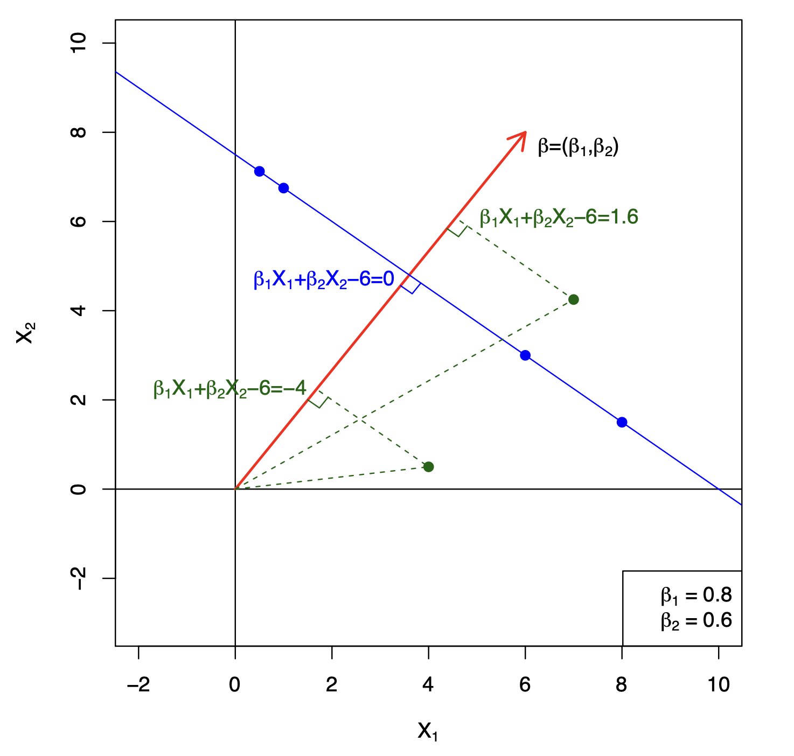Hyperplane in 2 Dimensions: Details
The figure demonstrates how hyperplanes separate data in classification or regression contexts: each point’s location relative to the hyperplane is captured by the signed distance.
- Hyperplane in 2D (Blue Line)
In two dimensions, a hyperplane is simply a straight line.
The blue line in the figure is defined by the equation
\[ \beta_1 x_1 + \beta_2 x_2 - 6 = 0. \]All points \((x_1, x_2)\) satisfying this equation lie exactly on the hyperplane.
- Normal Vector (Red Arrow)
- The red arrow represents the normal vector \(\beta = (\beta_1, \beta_2)\).
- This vector is orthogonal (perpendicular) to the hyperplane, meaning it points in the direction that is shortest from the line to any point off the line.
- The values \(\beta_1 = 0.8\) and \(\beta_2 = 0.6\) are displayed in the bottom right corner.
- Since the sum of their squares equals one (\(0.8^2 + 0.6^2 = 1\)), this vector is a unit vector.
- The red arrow represents the normal vector \(\beta = (\beta_1, \beta_2)\).
- Role of the Normal Vector in Classification
- The normal vector determines:
The orientation of the hyperplane (i.e., which way it is “tilted” in space).
Which side of the hyperplane a point belongs to.
The shortest distance of a point from the hyperplane.
If we substitute a point \(X = (X_1, X_2, ..., X_p)\) into the hyperplane equation: \[ f(X) = \beta_1 X_1 + \beta_2 X_2 + \dots + \beta_p X_p - 6 \]
- If \(f(X) > 0\) → The point is on one side of the hyperplane.
- If \(f(X) < 0\) → The point is on the opposite side.
- If \(f(X) = 0\) → The point lies on the hyperplane.
Illustrated Examples
- One point is 1.6, meaning it is 1.6 units away from the hyperplane in the direction of the normal vector.
- Another point is -4, indicating it is 4 units away on the opposite side of the hyperplane.
- Points on the blue line always have a function value of 0 because they satisfy \(\beta_1 x_1 + \beta_2 x_2 - 6 = 0\).
- One point is 1.6, meaning it is 1.6 units away from the hyperplane in the direction of the normal vector.
Key Insight
- In higher dimensions, the same idea generalizes: a hyperplane is a \((p-1)\)-dimensional flat surface in \(p\)-dimensional space, and its normal vector determines both orientation and distance computations.
Separating Hyperplanes
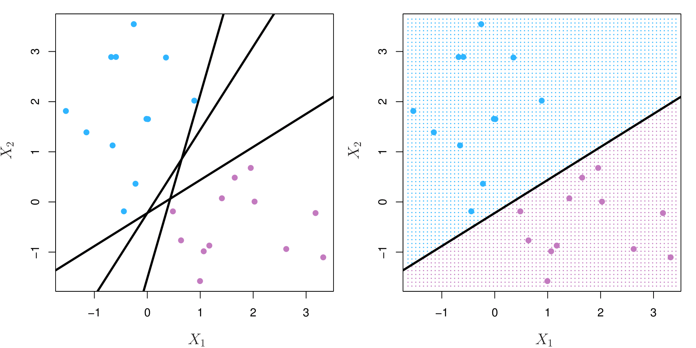If \(f(X) = \beta_0 + \beta_1 X_1 + \cdots + \beta_p X_p\), then \(f(X) > 0\) for points on one side of the hyperplane, and \(f(X) < 0\) for points on the other.
If we code the colored points as \(Y_i = +1\) for blue and \(Y_i = -1\) for purple, then if \(Y_i \cdot f(X_i) >0\) for all \(i\), \(f(X) = 0\) defines a separating hyperplane.
Separating Hyperplanes: Details
Left Plot:
The dataset contains two classes (blue and mauve points).
Multiple candidate hyperplanes are shown as black lines.
These hyperplanes attempt to separate the two classes, but not all do so optimally.
Right Plot:
A single separating hyperplane is shown.
The background is shaded to indicate decision regions:
- The blue-shaded region contains points classified as blue.
- The mauve-shaded region contains points classified as mauve.
A general equation of a hyperplane in a \(p\)-dimensional space: \[ f(X) = \beta_0 + \beta_1 X_1 + \dots + \beta_p X_p \]
- This function \(f(X)\) determines which side of the hyperplane a data point falls on:
- If \(f(X) > 0\) → The point lies on one side of the hyperplane.
- If \(f(X) < 0\) → The point lies on the other side.
- If \(f(X) = 0\) → The point lies exactly on the hyperplane.
- This function \(f(X)\) determines which side of the hyperplane a data point falls on:
Defining a Separating Hyperplane in Classification
In SVM classification, each data point \(X_i\) has a corresponding label \(Y_i\), where:
- \(Y_i = +1\) for one class (blue).
- \(Y_i = -1\) for the other class (mauve).
A perfectly separating hyperplane must satisfy the condition: \[ Y_i \cdot f(X_i) > 0 \quad \text{for all } i \]
This means:
- If \(Y_i = +1\), then \(f(X_i)\) must be positive (point is on the correct side).
- If \(Y_i = -1\), then \(f(X_i)\) must be negative (point is on the correct side).
- If this condition holds for all points, then the hyperplane separates the two classes.
Maximal Margin Classifier
The idea is: Among all separating hyperplanes, find the one that makes the biggest gap or margin between the two classes.

Constrained optimization problem:
\[ \text{maximize } M \quad \beta_0, \beta_1, \dots, \beta_p \]
subject to:
\[ \sum_{j=1}^p \beta_j^2 = 1, \]
\[ y_i (\beta_0 + \beta_1 x_{i1} + \dots + \beta_p x_{ip}) \geq M \quad \text{for all } i = 1, \dots, N. \]
Thus, we determine the hyperplane parameters that yield the largest possible margin \(m\) while ensuring that every data point lies at least \(m\) units away from the hyperplane. This guarantees a maximum separation between the two classes, leading to a robust classification model.
Non-separable Data
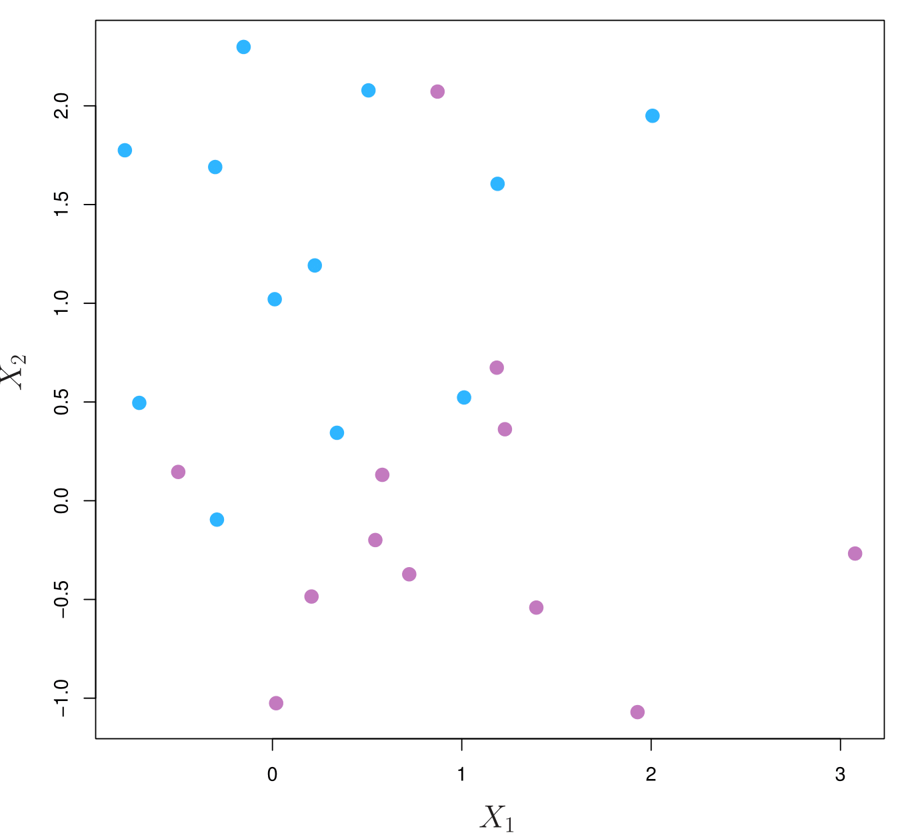The data are not separable by a linear boundary. This is often the case, unless \(N < p\).
Noisy Data
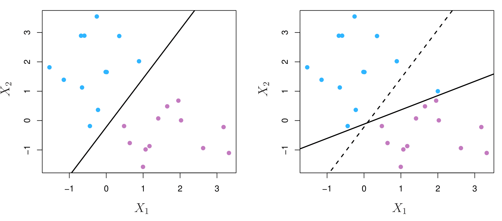Sometimes the data are separable, but noisy. In the right plot we add only one new data point in it results in a big change in the hyperplane that separates the two classes. This can lead to a poor solution for the maximal-margin classifier.
- The support vector classifier maximizes a soft margin and is a good option to deal both with non-separable and noisy data.
Support Vector Classifier
Support Vector Classifier - Ilustration
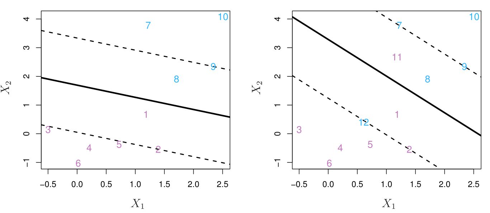- Left Plot: Data is Separable, but Soft Margin is Used
- Instead of using the narrowest possible margin, a wider margin has been enforced.
- Some points end up on the wrong side of their margin.
- Specifically, point 8 (blue) and another pink point violate their respective margin constraints.
- This illustrates the trade-off of using a soft margin: a wider margin often improves generalization but allows for some classification errors.
- The margin is determined by more than just the closest support vectors, incorporating the influence of points slightly beyond the margin.
- Right Plot: Data is Not Linearly Separable
- A soft-margin classifier is essential, as we must allow some misclassification.
- Some blue points are inside the margin or even misclassified (wrong side of the decision boundary).
- Some pink points also violate the margin.
- The soft margin formulation enables a balance between margin width and classification accuracy, allowing the model to find a reasonable decision boundary even when perfect separation is not possible.
Support Vector Classifier - Ilustration Details
Mathematical Formulation of the Soft-Margin SVM \[ \max_{β_0, β_1, ..., β_p, \epsilon_1, ..., \epsilon_n} M \]
Subject to the 3 constraints:
- Normalization Constraint:
\[ \sum_{j=1}^{p} \beta_j^2 = 1 \]- Ensures that the normal vector \(\beta\) is a unit vector, standardizing the optimization process.
- Margin Constraint with Slack Variables:
\[ y_i (\beta_0 + \beta_1 x_{i1} + \dots + \beta_p x_{ip}) \geq M(1 - \epsilon_i) \]- Normally, we require that each point lies at least \(M\) units away from the hyperplane.
- However, the slack variables \(\epsilon_i\) allow some flexibility:
- If \(\epsilon_i = 0\), the point is correctly classified outside the margin.
- If \(0 < \epsilon_i < 1\), the point is inside the margin but still on the correct side.
- If \(\epsilon_i \geq 1\), the point is misclassified.
- Total Slack Budget Constraint:
\[ \sum_{i=1}^{n} \epsilon_i \leq C, \quad \epsilon_i \geq 0 \]- The parameter \(C\) controls the total amount of slack allowed in the model:
- Large \(C\) → Less tolerance for margin violations (closer to hard-margin SVM).
- Small \(C\) → More tolerance for misclassification and margin violations.
- The parameter \(C\) controls the total amount of slack allowed in the model:
- Intuition Behind Soft Margins:
- In a hard-margin SVM, no points are allowed inside the margin.
- In soft-margin SVM, we introduce slack variables \(\epsilon_i\) to allow some violations of the margin.
- This provides a regularization effect:
- Prevents overfitting in cases where a perfect separation exists but may be too rigid.
- Allows classification in non-linearly separable cases by balancing misclassification and margin width.
\(C\) is a Regularization Parameter - Ilustration
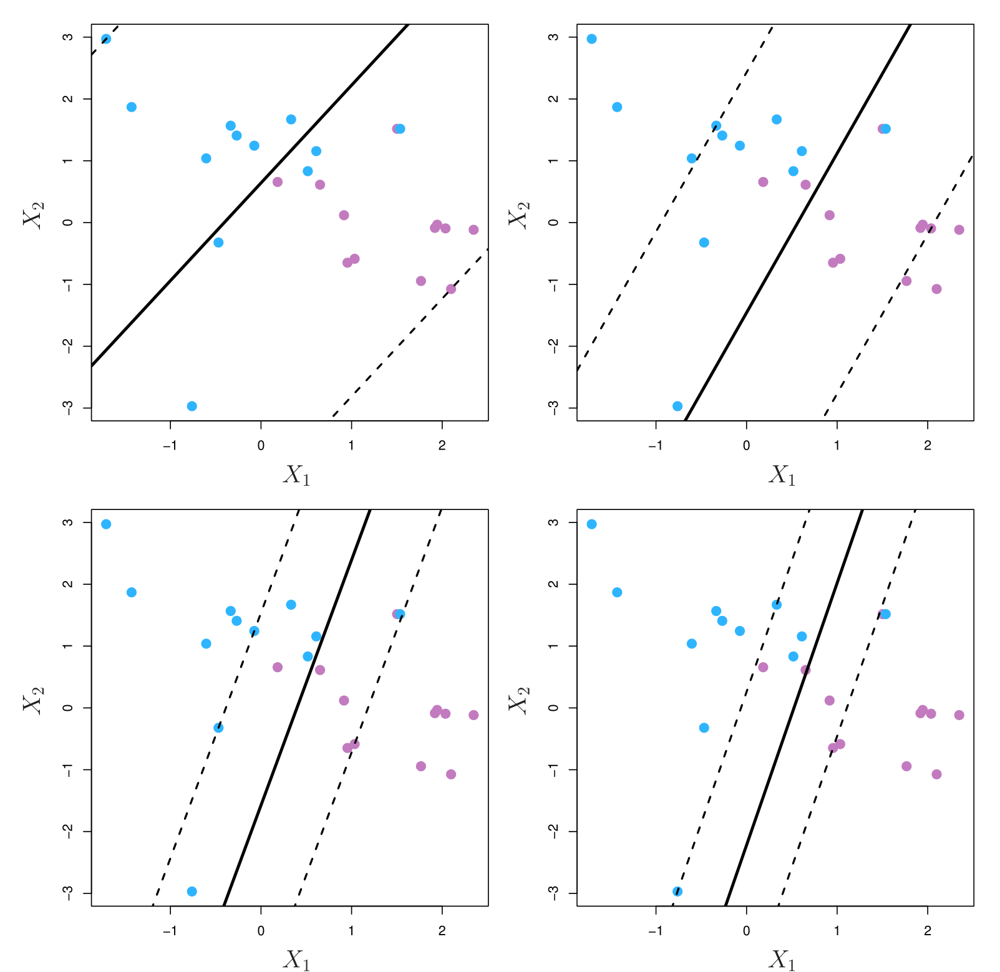\(C\) is a Regularization Parameter - Ilustration Details
The four plots illustrate different values of \(C\), showing the trade-off between margin width and classification flexibility.
- Top-Left Plot (Largest \(C\))
- Here, \(C\) is very large, meaning the model strongly penalizes misclassified points.
- As a result, the decision boundary is rigid, and only a few points violate the margin.
- Many points are on the wrong side of their respective margins, but the model still prioritizes keeping the margin as wide as possible while satisfying the constraint.
- Top-Right & Bottom-Left Plots (Intermediate \(C\))
- As \(C\) is decreased, the model allows more margin violations (misclassified or within-margin points).
- The margin becomes tighter because the optimization prioritizes correcting misclassified points rather than maximizing margin width.
- More points now contribute to determining the decision boundary, leading to increased stability.
- Bottom-Right Plot (Smallest \(C\))
- With a small \(C\), the model tolerates many margin violations and allows points to be misclassified.
- The decision boundary adjusts to reduce the number of misclassified points, even at the cost of a narrower margin.
- This results in a more flexible model that is less sensitive to small variations in data.
The Bias-Variance Trade-off in SVM
Large \(C\) (Less Regularization, Harder Margin) → Low Bias, High Variance
- Fewer margin violations → Less flexibility, but possibly overfitting.
- Model depends on a few critical support vectors, making it more sensitive to small changes in data.
Small \(C\) (More Regularization, Softer Margin) → High Bias, Low Variance
- More margin violations → More flexibility, but possibly underfitting.
- Many points influence the decision boundary, leading to a more stable model.
Standardizing Variables is Important in SVM
SVM treats all variables equally, meaning features with different scales can disproportionately influence the margin.
Standardizing (e.g., transforming variables to have zero mean and unit variance) ensures that:
- The distance metric (Euclidean distance) is meaningful.
- The optimization process does not favor one feature due to its larger magnitude.
This is the same reason why standardization is important in Ridge and Lasso regression.
Conclusion
\(C\) controls the trade-off between margin width and misclassification tolerance.
A higher \(C\) enforces a stricter margin (less regularization) but may overfit the data.
A lower \(C\) allows more misclassification (more regularization) but may generalize better.
Standardization is crucial for SVM to ensure fair treatment of all variables.
SVM with Nonlinear Boundary
Linear Boundary Can Fail
Sometimes a linear boundary simply won’t work, no matter what value of \(C\). What to do?
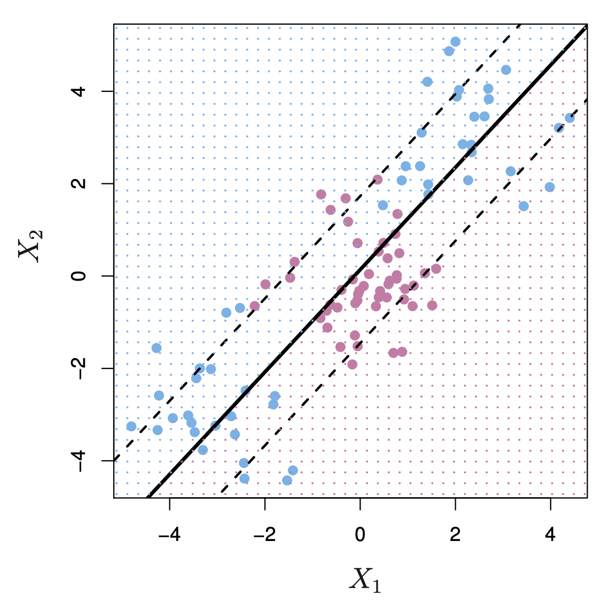Feature Expansion
Enlarge the space of features by including transformations; e.g. \(X_1^2, X_1^3, X_1X_2, X_1X_2^2, \dots\). Hence go from a \(p\)-dimensional space to a \(M > p\)-dimensional space (not the same \(M\) as we used for margin).
Fit a support-vector classifier in the enlarged space.
This results in non-linear decision boundaries in the original space.
Example: Suppose we use \((X_1, X_2, X_1^2, X_2^2, X_1X_2)\) instead of just \((X_1, X_2)\). Then the decision boundary would be of the form: \[ \beta_0 + \beta_1 X_1 + \beta_2 X_2 + \beta_3 X_1^2 + \beta_4 X_2^2 + \beta_5 X_1X_2 = 0 \]
- This leads to nonlinear decision boundaries in the original space (quadratic conic sections).
Cubic Polynomials
Here we use a basis expansion of cubic polynomials. From 2 variables to 9:
\[ \beta_0 + \beta_1 X_1 + \beta_2 X_2 + \beta_3 X_1^2 + \beta_4 X_2^2 + \beta_5 X_1 X_2 + \beta_6 X_1^3 + \beta_7 X_2^3 + \beta_8 X_1^2 X_2 + \beta_9 X_1 X_2^2 = 0 \]
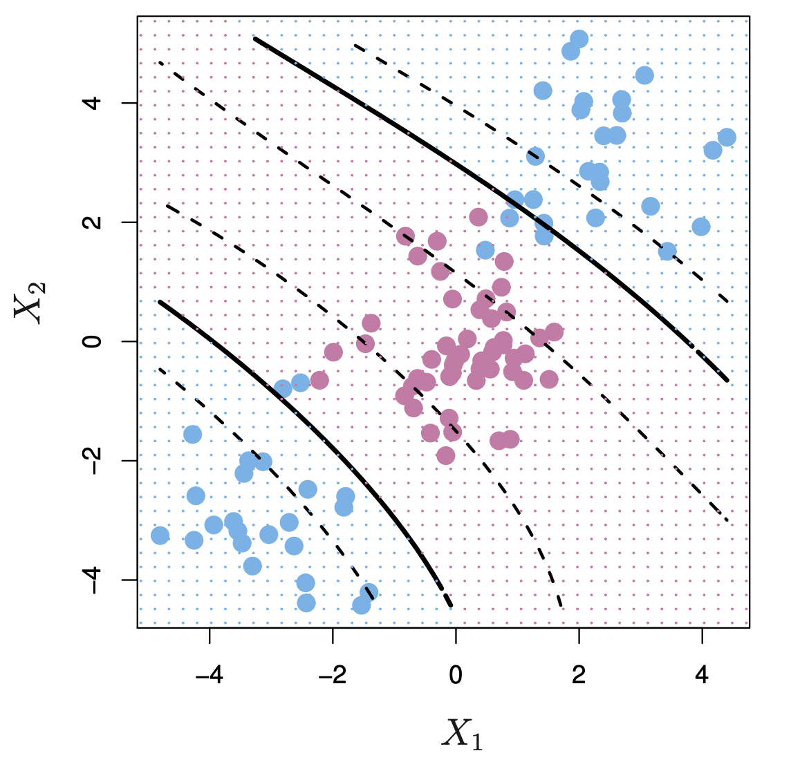- The support-vector classifier in the enlarged space solves the problem in the lower-dimensional space.
Nonlinearities and Kernels
Nonlinearities and Kernels
Polynomials are not always the greatest choice (especially high-dimensional ones) as they get wild rather fast.
There is a more elegant and controlled way to introduce nonlinearities in support-vector classifiers — through the use of kernels.
Before we discuss these, we must understand the role of inner products in support-vector classifiers.
Inner Products
The inner product (dot product) between two vectors \(x_i\) and \(x_i'\):
\[ \langle x_i, x_i' \rangle = \sum_{j=1}^{p} x_{ij} x_{i'j} \]
where:
\(x_i\) and \(x_i'\) are two vectors in \(p\)-dimensional space.
The summation runs over all dimensions \(j\) from 1 to \(p\).
Each term \(x_{ij} x_{i'j}\) represents the product of corresponding components of the two vectors.
Interpretation: The inner product (dot product) measures the similarity between two vectors in a given space. It is computed by multiplying corresponding elements of the two vectors and summing up the results.
If \(x_i\) and \(x_i'\) are aligned (pointing in the same direction) → The inner product is large and positive.
If \(x_i\) and \(x_i'\) are perpendicular (orthogonal) → The inner product is zero.
If \(x_i\) and \(x_i'\) point in opposite directions → The inner product is negative.
Inner Products and Support Vectors
The decision function of a Linear SVC is expressed as:
\[ f(x) = \beta_0 + \sum_{i=1}^{n} \alpha_i \langle x, x_i \rangle \]
where:
- \(f(x)\) represents the classification function that determines whether a new point \(x\) belongs to one class or another.
- \(\beta_0\) is the intercept (bias term).
- \(\alpha_i\) are the Lagrange multipliers, which determine the influence of each training example on the decision boundary.
- \(x_i\): Training Data Points: \(x_i\) represents a training example**, which is one of the points in the training dataset.
- Each \(x_i\) is a feature vector in a \(p\)-dimensional space \(x_i = (x_{i1}, x_{i2}, \dots, x_{ip})\)
- \(x\): A New Input Example (Test Point): \(x\) is a new data point** (not necessarily in the training set) for which we want to make a prediction.
- Like \(x_i\), it is also a feature vector in the same \(p\)-dimensional space \(x = (x_1, x_2, \dots, x_p)\)
- The classifier evaluates \(f(x)\) to determine the class of \(x\).
- The decision function \(f(x)\) compares this new point to all training points \(x_i\) using their inner products.
- \(\langle x, x_i \rangle\) represents the inner product (dot product) between the input vector \(x\) and each training point \(x_i\), which captures the similarity between them.
- \(n\) is the total number of training points.
Computational Efficiency: Using Inner Products
Instead of directly computing \(\beta\) coefficients for each feature, the SVC relies only on pairwise inner products between training points. This reduces the complexity of parameter estimation.
To estimate \(\alpha_1, \dots, \alpha_n\) and \(\beta_0\), we only need the \(\binom{n}{2}\) pairwise inner products \(\langle x_i, x_i \rangle\).
This simplifies the optimization problem, making it computationally feasible even for high-dimensional datasets.
The Role of Support Vectors
One of the key properties of Support Vector Machines (SVMs) is sparsity in the solution.
Most of the \(\hat{\alpha}_i\) values will be zero, because the SVM optimization process ignores non-critical points.
- Only a small subset of training points (the support vectors) have \(\alpha_i > 0\) and influence the decision boundary. This sparsity property makes SVMs both efficient and interpretable.
Thus, the decision function simplifies to: \[ f(x) = \beta_0 + \sum_{i \in S} \hat{\alpha}_i \langle x, x_i \rangle \]
where:
- \(S\) is the support set, the set of indices \(i\) such that \(\hat{\alpha}_i > 0\).
- These points, called support vectors, are the only points that determine the optimal hyperplane.
This means that most training points do not influence the classifier, making SVMs computationally efficient because only a small subset of training points (the support vectors) needs to be stored and used for classification.
Why is This Important?
- Sparsity: Since only a few points contribute to the final decision boundary, SVMs are efficient and robust to noise.
- Computational Simplicity: Instead of solving for \(n\) parameters explicitly, we only compute the inner products for support vectors, making the method scalable to large datasets.
- Extensibility to Nonlinear SVMs: This formulation is the foundation for Kernel SVMs, where the inner product \(\langle x, x_i \rangle\) is replaced by a nonlinear kernel function to allow nonlinear decision boundaries.
Kernels and Support Vector Machines
If we can compute inner products between observations, we can fit a SV classifier.
Some special kernel functions can do this for us. E.g., \[ K(x_i, x_{i'}) = \left(1 + \sum_{j=1}^p x_{ij} x_{i'j}\right)^d \] computes the inner products needed for \(d\)-dimensional polynomials — \(\binom{p+d}{d}\) basis functions!
The solution has the form: \[ f(x) = \beta_0 + \sum_{i \in S} \hat{\alpha}_i K(x, x_i). \]
Radial Kernel
One of the most popular kernel!
\[ K(x_i, x_{i'}) = \exp\left(-\gamma \sum_{j=1}^p (x_{ij} - x_{i'j})^2 \right). \]
where \(\gamma\) is a tuning parameter.
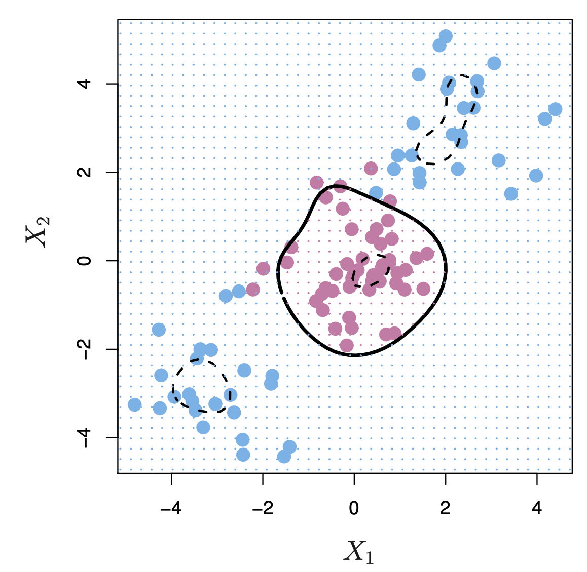
\[ f(x) = \beta_0 + \sum_{i \in S} \hat{\alpha}_i K(x, x_i). \] - The solid black line encloses a region classified as one class (pink points).
The dashed lines in the image represent decision boundaries created by the Radial Basis Function (RBF) kernel in a Support Vector Machine (SVM). These boundaries separate different regions of classification based on the nonlinear transformation performed by the Radial Kernel.
Implicit feature space; very high dimensional.
Controls variance by squashing down most dimensions severely.
Example: Heart Data
Example: Heart Data
Here we see ROC curves on training data.
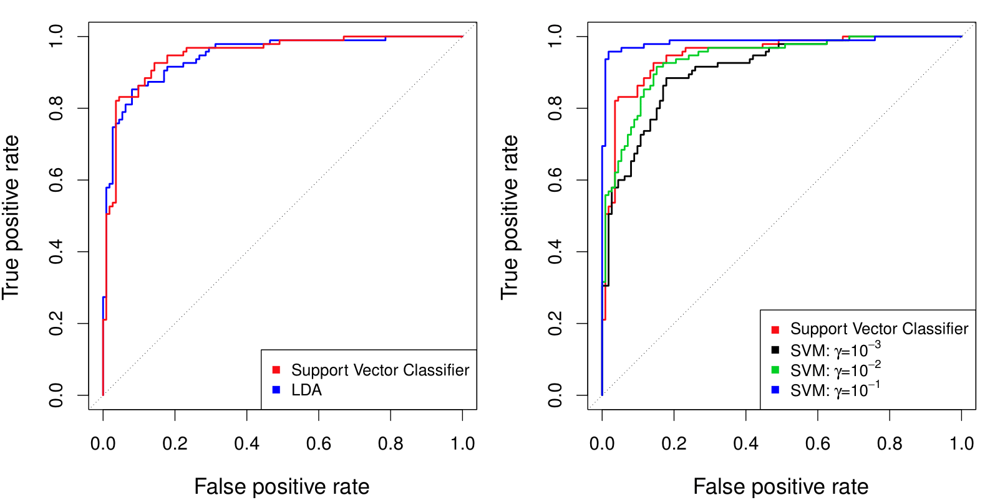
- Left: We compare a Linear Suport Vector Machine with Linear Discriminant Analysis (LDA).
- Right: We compare a Linear Suport Vector Machine with the SVM using a radial kernel with different values of \(\gamma\).The larger \(\gamma\) the more wiggly the decision boundary.
Example: Heart Data
Here we see ROC curves on testing data.
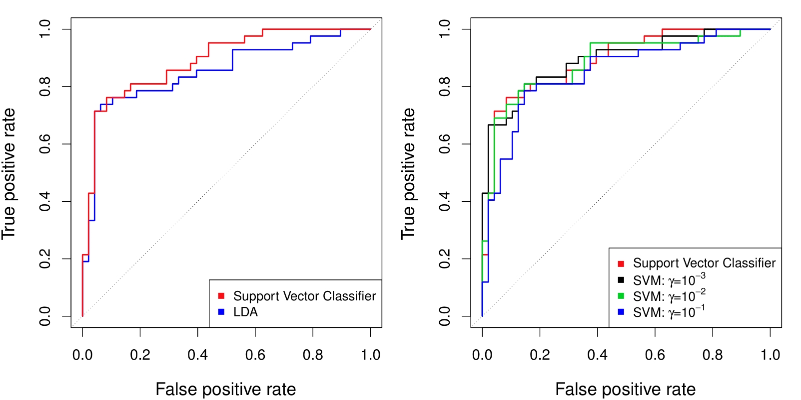SVMs: More Than 2 Classes
SVMs: More Than 2 Classes?
The SVM as defined works for \(K = 2\) classes. What do we do if we have \(K > 2\) classes?
There are two famous options:
OVA (One versus All): Fit \(K\) different 2-class SVM classifiers \(\hat{f}_k(x)\), \(k = 1, \dots, K\); each class versus the rest. Classify \(x^*\) to the class for which \(\hat{f}_k(x^*)\) is largest.
OVO (One versus One): Fit all \(\binom{K}{2}\) pairwise classifiers \(\hat{f}_{k\ell}(x)\). Classify \(x^*\) to the class that wins the most pairwise competitions.
Which to choose?
- If \(K\) is not too large, use OVO.
Support Vector versus Logistic Regression
Support Vector versus Logistic Regression
With \(f(X) = \beta_0 + \beta_1 X_1 + \dots + \beta_p X_p\), we can rephrase support-vector classifier optimization as:
\[ \text{minimize}_{\beta_0, \beta_1, \dots, \beta_p} \left\{ \sum_{i=1}^n \max \big[ 0, 1 - y_i f(x_i) \big] + \lambda \sum_{j=1}^p \beta_j^2 \right\} \]
where:
\(f(X) = \beta_0 + \beta_1X_1 + \dots + \beta_pX_p\) represents the linear decision function.
\(y_i\) is the class label (\(+1\) or \(-1\)).
The term \(\max [0, 1 - y_i f(x_i)]\) is the hinge loss, which penalizes misclassified or margin-violating points.
The term \(\lambda \sum_{j=1}^{p} \beta_j^2\) is a regularization term (often L2 regularization), which helps control the model complexity and prevent overfitting.
This structure is loss plus penalty, meaning SVM aims to minimize classification errors while maintaining a large margin between classes.
Support Vector versus Logistic Regression
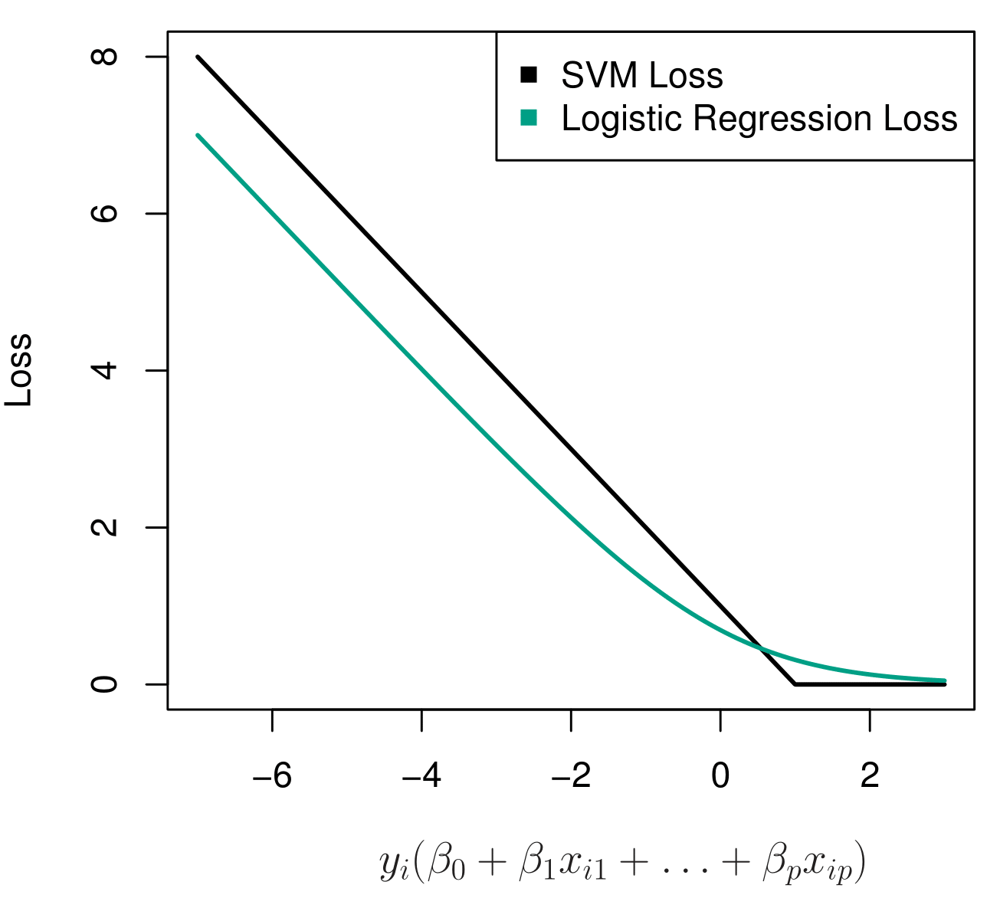
The plot compares the loss functions of SVM (hinge loss) and logistic regression (negative log-likelihood loss).
SVM hinge loss (black line):
- Zero loss when \(y_i f(x_i) \geq 1\) (correctly classified with a sufficient margin).
- Linear penalty for points within the margin (\(0 < y_i f(x_i) < 1\)).
- Constant penalty for misclassified points (\(y_i f(x_i) < 0\)).
Logistic Regression loss (green line):
- Smooth, continuously decreasing function.
- Assigns nonzero loss to all points, meaning it never fully ignores correctly classified points.
The key difference:
- SVM loss is piecewise linear and focuses on margin violations.
- Logistic regression loss is smooth and penalizes all points proportionally.
Main Takeaway
- Both SVM and Logistic Regression use a loss function + regularization framework.
- SVM uses hinge loss, which only cares about points inside or outside the margin.
- Logistic regression uses log-likelihood loss, which penalizes all points, even well-classified ones.
- SVM is more robust to outliers because it ignores well-classified points beyond the margin.
- Logistic Regression is probabilistic, while SVM is geometric, focusing on maximizing the margin.
Which to Use: SVM or Logistic Regression
When classes are (nearly) separable, SVM does better than Logistic Regression. So does LDA.
When not, Logistic Regression (with ridge penalty) and SVM are very similar.
If you wish to estimate probabilities, Logistic Regression is the choice.
For nonlinear boundaries, kernel SVMs are popular. Can use kernels with Logistic Regression and LDA as well, but computations are more expensive.
Summary
- Hyperplanes and Normal Vectors
- A hyperplane is a \((p-1)\)-dimensional boundary in \(p\)-dimensional space.
- Its orientation is determined by the normal vector \(\beta\), which is orthogonal to the hyperplane.
- A hyperplane is a \((p-1)\)-dimensional boundary in \(p\)-dimensional space.
- Maximal Margin and Soft Margins
- The maximal margin classifier seeks the widest possible gap between classes.
- Soft margins allow some misclassifications (via slack variables \(\epsilon_i\)) when data are not perfectly separable.
- The maximal margin classifier seeks the widest possible gap between classes.
- \(C\) as a Regularization Parameter
- Large \(C\) → Strict margin (less regularization), fewer misclassifications, but higher risk of overfitting.
- Small \(C\) → Softer margin (more regularization), more misclassifications allowed, but often better generalization.
- Large \(C\) → Strict margin (less regularization), fewer misclassifications, but higher risk of overfitting.
- Kernels for Nonlinear Boundaries
- Kernel functions (e.g., polynomial, radial basis) map data into higher-dimensional spaces for nonlinear decision boundaries.
- The inner product \(\langle x, x_i \rangle\) becomes \(K(x, x_i)\) in kernel SVMs, enabling complex separations.
- Kernel functions (e.g., polynomial, radial basis) map data into higher-dimensional spaces for nonlinear decision boundaries.
- Support Vectors and Sparsity
- Only a subset of training points (support vectors) have \(\alpha_i > 0\).
- This sparsity makes SVMs computationally efficient and robust to outliers.
- Only a subset of training points (support vectors) have \(\alpha_i > 0\).
- SVM vs. Logistic Regression
- SVM uses hinge loss (piecewise linear), focusing on margin violations.
- Logistic Regression uses log-likelihood loss, penalizing all misclassifications smoothly.
- When classes are nearly separable, SVM often outperforms logistic regression (and LDA).
- Logistic regression provides probabilistic outputs; SVM is more geometric.
- SVM uses hinge loss (piecewise linear), focusing on margin violations.
- Multiclass Extensions
- Implemented via One-vs-All (OVA) or One-vs-One (OVO) schemes for \(K>2\) classes.
- Standardization
- Standardize features so that no single variable dominates the margin.
- Similar to Ridge and Lasso, SVM is sensitive to feature scales.
- Standardize features so that no single variable dominates the margin.
Key Message:
SVMs excel at maximizing margins and can handle complex decision boundaries via kernels. The choice of \(C\), kernel, and feature scaling profoundly affects performance and generalization.
Thank you!
Predictive Analytics